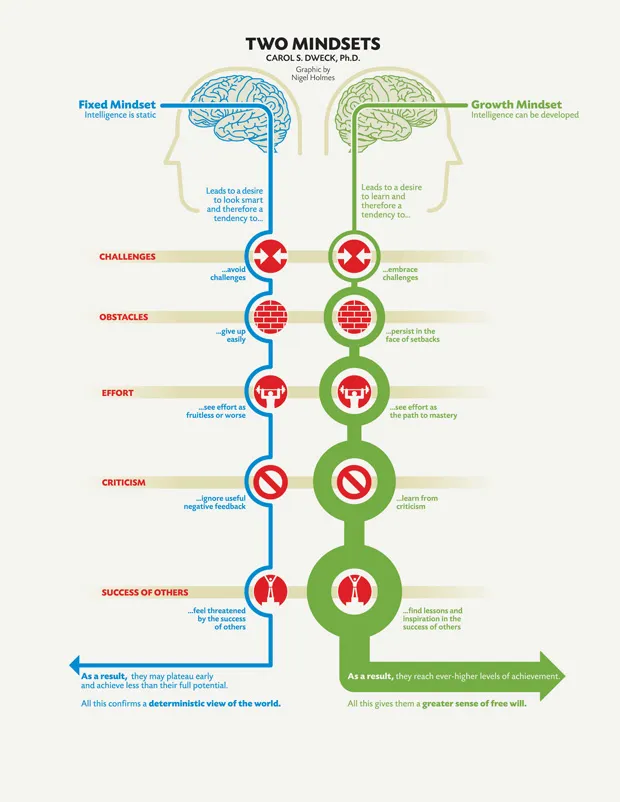

The Growth Mindset
Growth Mindset is a way of thinking in which intelligence and ability are capable of improvement and problems are seen as challenges and opportunities to learn. This is in contrast to the Fixed Mindset in which intelligence and ability are seen as static problems are seen as potential demonstrations of inadequacy and so are avoided. Studies have shown that those with the growth mindset do better academically at school and in business, the growth mindset is associated with improved resilience in the face of setbacks and curiosity which can lead to innovation.

Discuss what it is and why it is relevant.
The depth of study of the growth mindset was surprising. Particularly the studies looking at using a growth mindset approach in areas of poor academic performance and the significant impact it had upon their final grades compared to other schools. It was good to learn that the growth mindset can be taught!
In this exploration, did anything surprise you? Change for you?
The depth of study of the growth mindset was surprising. Particularly the studies looking at using a growth mindset approach in areas of poor academic performance and the significant impact it had upon their final grades compared to other schools. It was good to learn that the growth mindset can be taught!
How will you integrate growth mindset into your learning journey?
- Try to see each problem as a challenge
- Try not to feel down if I cannot work something out
- Think "not yet" instead of "no"
- Explore further any areas that spark curiosity in me
- Encourage growth mindset in those around me
- Celebrate effort, not just success
Link to a resource that you found particularly useful or engaging.
For more information on Growth Mindset in business visit-
https://online.hbs.edu/blog/post/growth-mindset-vs-fixed-mindset